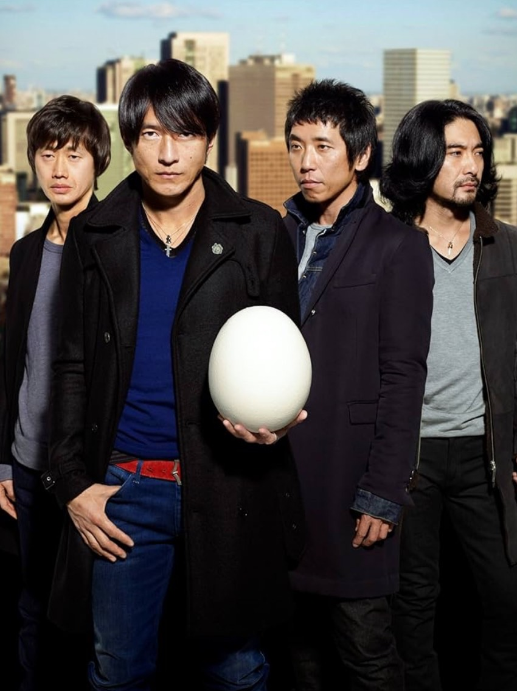

漢になるには～その①～
皆さんこんにちは！！1班GAの三浦友一です。
本日は自他共に男、いや漢と認められている私がどのようにして漢になれたのか、漢になるためには何が必要なのかについて綴らせていただきます。
漢道その1～Mr.Childrenを聴くべし～

私は漢になるためには、肉体を鍛えることよりも、精神を鍛えるべきだと考えます。精神を鍛えるためには、豊かな心を育む必要があります。
そのためにまず必要なことはMr.Childrenを聴くことです。私はミスチルが好きな父の影響を受けて幼少期のころから聴いていました。
特に「終わりなき旅」の「高ければ高い壁の方が登った時気持ちいいもんな」という歌詞に、自分は何度も救われてきました。
つらいとき、苦しいとき、何をやっても上手くいかない時に歌詞が心にめちゃくちゃ刺さります。
この曲以外にも、オススメしたい曲はたくさんありますが、今日はこのくらいしときます。
是非皆さんもミスチルの曲を聴いてみて下さい！